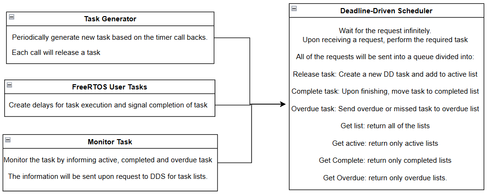

Project 1 — Traffic Light System
A one-lane intersection simulated in hardware: a potentiometer sets the traffic density, LEDs driven through shift registers show cars advancing toward the light, and the signal timing adapts to the measured flow. The design decomposes cleanly into four FreeRTOS tasks — flow measurement (ADC), traffic generation, light control, and display — communicating over queues, with software timers sequencing the green/yellow/red phases. Heavier traffic shortens the red phase; light traffic lengthens it.
Project 2 — Deadline-Driven Scheduler
FreeRTOS schedules by fixed priority; this project adds true earliest-deadline-first scheduling on top. A highest-priority DDS task owns three linked lists (active, completed, overdue) and processes release/complete/overdue events from a request queue. It sorts released tasks by absolute deadline with an insertion algorithm, then manipulates FreeRTOS priorities so only the earliest-deadline task runs. A generator releases periodic task sets and a monitor reports list states, letting us validate the schedule against hand-drawn Gantt charts across three test benches — including a deliberately overloaded 100%-utilization case where deadline misses are expected and correctly detected.

Highlights
- Idiomatic FreeRTOS design: tasks, queues, software timers, semaphores, and xQueueOverwrite mailboxes.
- EDF insertion sort over linked task lists with explicit handling of empty-list, head, mid-list, and tail cases.
- Dynamic priority manipulation to realize EDF on a fixed-priority kernel, with overdue detection via a re-armed deadline timer.
- Validated against Gantt-chart predictions over 1500 ms hyperperiods on three test benches, up to 100% CPU utilization.
Files & downloads
Source files were reconstructed from the code appendices of the two reports.